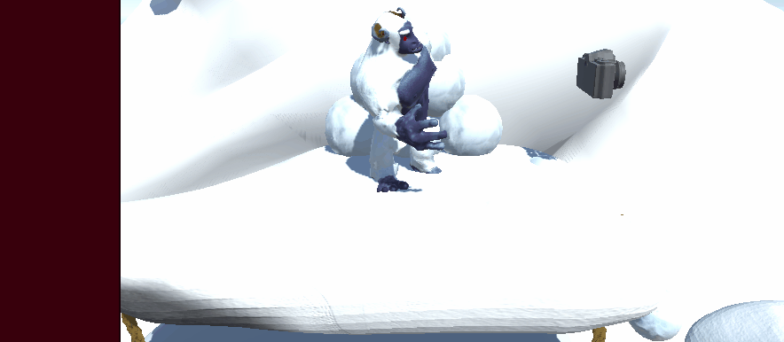
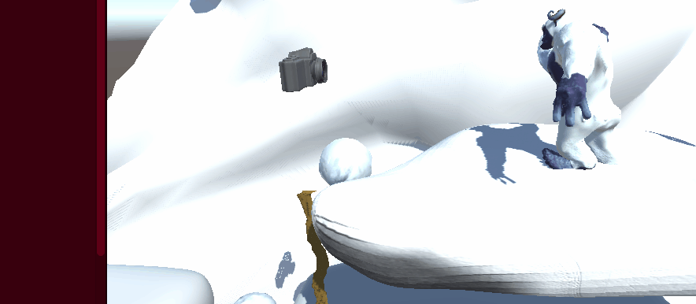

Here I will highlight some of systems I developed during this project.

The snowballs that the Yeti throws out move at a set speed. There are invisible barriers on the side of the map that only the snowballs can collide with. When the snowballs hit the barriers they start to move in the opposite direction.


The Yeti will throw snowballs depending on where the player is. If the player is on the Yeti's right he'll throw them to the right. If the player is on the Yeti's left he'll throw them to the left.